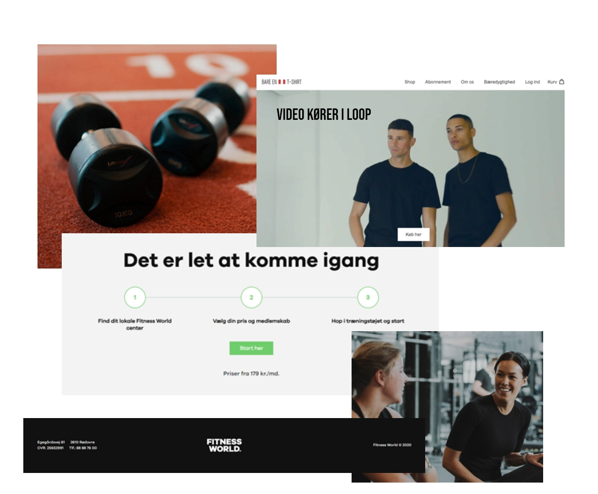

Redesign - 05.03.01

I denne gruppeopgave skulle vi finde et firma, hvis hjemmeside vi ikke synes fungerede optimalt, så vi kunne redesigne den.
Min gruppe og jeg valgte New fitness, som er et fitnesscenter i Albertslund.
Vi lavede en masse forarbejde, bestående af moodboards, styletiles, wireframes og forskellige tests. Vi fik også taget nogle nye billeder, som vi kunne bruge i vores redesign.
Vi fik lavet en redesignet hjemmeside, som var mere brugervenlig og overskuelig end før.
Derefter lavede vi igen forskellige tests for at få en vurdering af den nye side.
Til sidst fremlagde vi vores redesign og fik feedback af vores medstuderende og underviser.
Se vores redesign her
Proces
Moodboard og styletile

Billeder